石仏の森＆石像の里/富山県大沢野町
今回は久々に心底ビックリしました。 紅葉で有名な神通峡の近くに石像がたくさんあると聞き、行ってみた。 国道から一本入った道を車で走る事数キロ、おおさわの石仏の森という板碑が見えて来た。 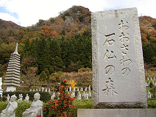 まずはその規模にビックリ仰天！ 小さなダム湖を望む傾斜地に五百羅漢の石像がズラズラズラ〜っと並んでいる。 石仏の森って森の中に石仏があるんじゃなくて石仏が森のようにあるってゆー意味なのね。 ちなみにこの板碑の裏側には物凄くでかい字で 一蓮托生 と刻まれてました。 俺も羅漢さんの仲間入りって事ですか？いいんですかあ〜、へっへっへっ・・・ 石像の大きさは等身大かチョット大きめ位か。 羅漢の石像といえば精々1メートル程度のものが多いが、等身大以上の五百羅漢はさすがに迫力がある。しかもこの規模。 メガトン級といってイイでしょう。 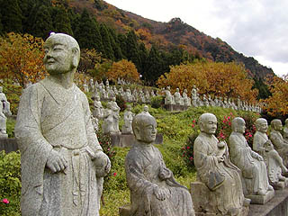 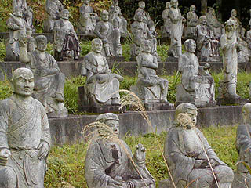 最近つくられたと思しき羅漢さん。お腹の中から顔が覗いている位ならよくあるのだが・・・ 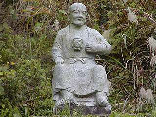 生首を掲げる羅漢像っていうのは如何なモンでしょうか・・・ 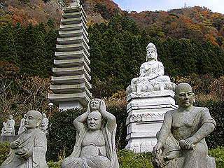 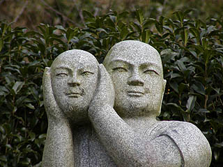 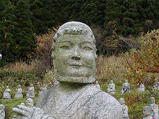 髭も髪もカッコ良過ぎますね。 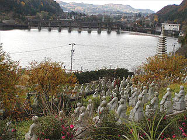 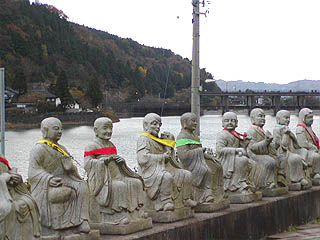 ここは別にお寺があるわけでもない。 場所柄、近在の人が来てお参りをする風でもなく、お賽銭があげられている訳でもなく線香があがっている訳でもない。 そう、まさに「石仏の森」の名のとおり、参拝者が来る来ないに関わらず羅漢像がそこにいる、というだけの場所なのかもしれない。 どっちかというと石仏の原生林ですね。出来た時点で遺跡の風格。見事です。 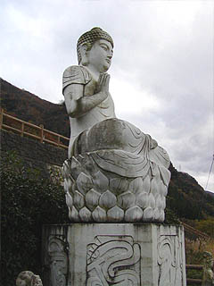 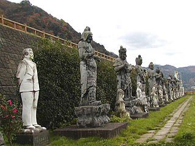 この石仏の森には羅漢像の他にも幾つか仏像が並んでいる。 その端に何故かスーツ姿の男性の石像が立っている。今思えばこの後の展開を大いに暗示しまくっているのだが・・・ 境内（？）の一画には休憩所があり、案の定、閉鎖されていた（オフシーズン、ということらしい）が、その近くにこの石像の森に関する簡単な説明が紙に書かれて貼ってあった。 それによると・・・ 何と！ この先にもまだふれあい石像の里なるものがあるそうな！ そりゃ行かねば。急げ。急げ！
・・・というわけで五百羅漢からさらにダム湖を遡る事、数分後。 ふれあい石像の里である。 目の前にはこんな光景が広がっていた・・・ 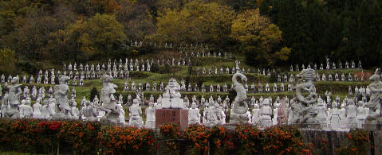 しばし唖然、呆然、そして驚愕。 先程の五百羅漢群よりさらにスケールアップした石像群がズラズラズラズラズラズラ〜っと並んでいる。 し・か・も・・・ 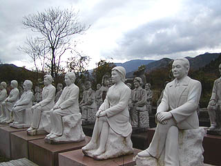 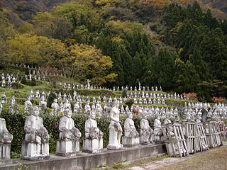 えええ〜っ！ せっ、石仏じゃねえええええ〜！！！！！！ この人達は一体誰なんだ〜〜なんだ〜なんだあああああ〜！！！！！（5分間気絶） 誰が何時どのように何故どうやってこの風景をつくりあげたのだ！ いや、誰とか何時とかそんな事はこの際どうでもいい。なんでコレを作ったんだ！！ 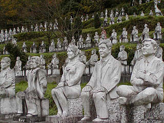 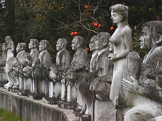 この謎の座像の大群、改めて見てもやっぱ普通の人物像である。 そりゃ、人物の座像ぐらい、例えば学校とか会社の庭なんかにいけばそんなに珍しいモンじゃあないですよ。 でも・・・これだけ大量にあるという事はその特定の人物を顕彰してとかそういう類いのものではないのだろう。 ・・・ということはコレ、お墓？いや、お墓にも見えないが。何かの供養？そういえば台座にそれぞれ名前が彫ってあるぞ。 供養の像だとしたらそれはそれで凄すぎるぞ！ ？？？？？？？？ 数多くの疑問を残しつつとりあえず先に進もう。 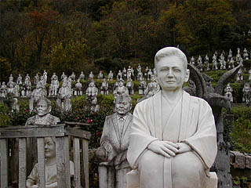 像はすべて大理石製である。 従って新しいものは真っ白で奇麗だが、設置されて数年経過したと思われるものは黒ずんでいて、より一層不思議さがパワーアップしているようにみえる。 先程の石仏の森がメガトン級ならこちらはギガトン級です。 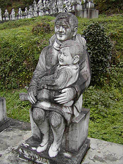 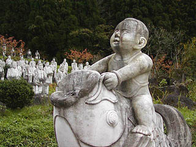 子供2題。う〜ん、ホントに供養の像なのだろうか・・・ 花とか線香とか手向けられた様子はないけど・・・とりあえず手だけ合わせておくか・・・ 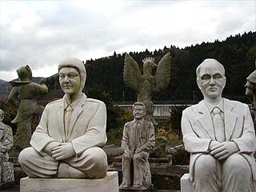 こちらの左の御仁はズラ？ 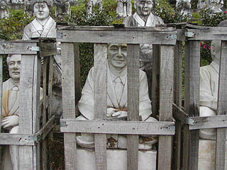 こちらのお方は未開封。恐らく台湾か中国あたりでつくられたのだろう。このように檻に入ったようなお方が何人かいました。 早く出してあげなきゃでしょう。 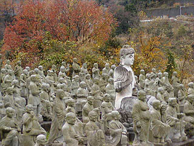 一画にはこれまた羅漢像とひと回り大きい仏さんがいるが、むしろこちらの方が普通に見えて来ました。 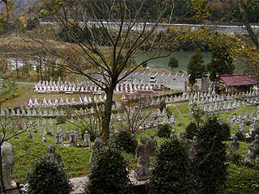 後日、調べてみるとこの石像群、とある社長さんがその知人友人恩人社員などを感謝の意を込めて石像にしたためたらしい。 つまり個人の友達博物館って事ですね。物凄い感謝の意ですな。 さぞ石像にされた方々も草葉の陰でお喜びになられている事でしょう・・・ あっ！今も生きてる人って事か・・・スミマセン、拝んじゃいました！ 俺も友達になりたいぞ〜！
情報提供は伊藤剛さんと高橋秀介さんです。
追記今回、情報をいただいた伊藤さんによるとこの石像の里の座像は確実に増えているらしい。 そういえば入口近くの赤御影石の台座に乗っている座像は新しいもののようだ。 つまり今後もこの座像は増え続けると考えられる。 この先、どうなっちゃうんでしょう？ ありがたや、おそろしや。
2003.11.
珍寺大道場 HOME